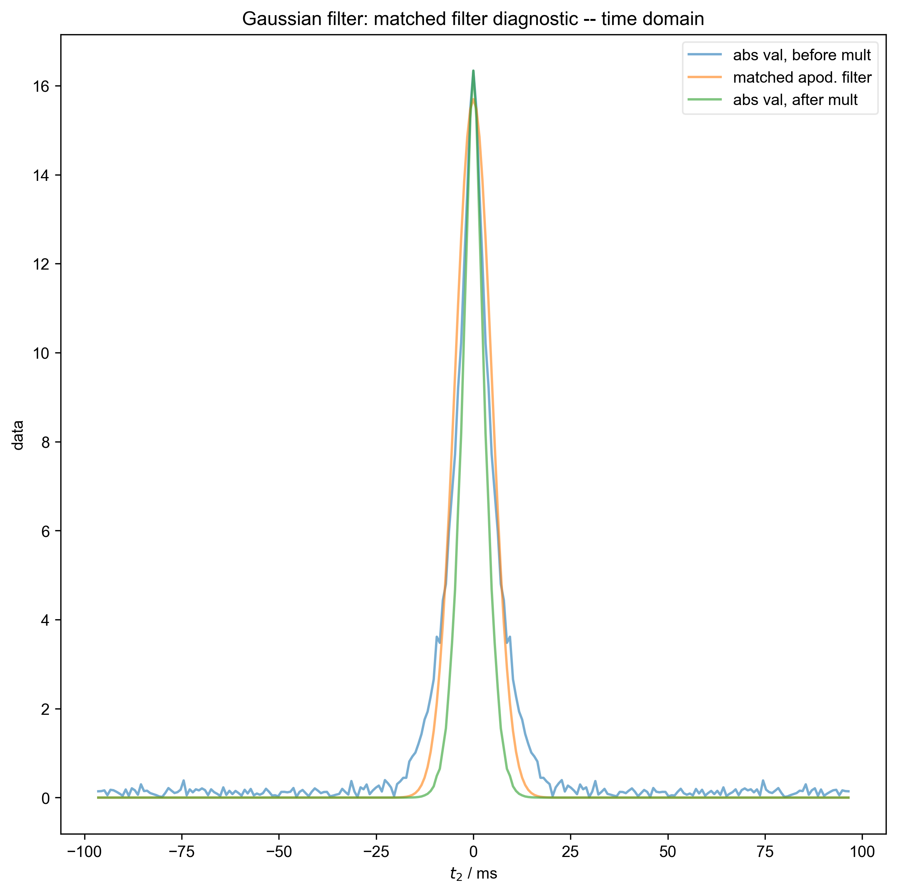

Note
Go to the end to download the full example code
Demonstrate Integrate Limits¶
For this demonstration, we generate inversion recovery data for a single peak, with a relatively mild frequency variation, so that no serious alignment is required before integration. We mimic the 8-step phase cycle used for echo detection in these experiments, and include the effect of the echo time on the data detected in the time domain.
We use integrate_limits to detect the frequency limits used for peak integration, based on a matched Lorentzian filter on our frequency domain data.
We illustrate the position of the frequency limits with vertical lines on the final plot.


- 

---------- logging output to /home/jmfranck/pyspecdata.0.log ----------
/home/jmfranck/git_repos/proc_scripts/pyspecProcScripts/first_level/fake_data.py:58: SymPyDeprecationWarning:
Passing the function arguments to lambdify() as a set is deprecated. This
leads to unpredictable results since sets are unordered. Instead, use a list
or tuple for the function arguments.
See https://docs.sympy.org/latest/explanation/active-deprecations.html#deprecated-lambdify-arguments-set
for details.
This has been deprecated since SymPy version 1.6.3. It
will be removed in a future version of SymPy.
thefunction = lambdify(mysymbols, expression, "numpy")
/home/jmfranck/base/lib/python3.11/site-packages/matplotlib/cbook.py:1699: ComplexWarning: Casting complex values to real discards the imaginary part
return math.isfinite(val)
/home/jmfranck/base/lib/python3.11/site-packages/matplotlib/cbook.py:1345: ComplexWarning: Casting complex values to real discards the imaginary part
return np.asarray(x, float)
Determined frequency limits via Lorentzian filter of [-12.9048583 193.57287449]
Determined frequency limits via Gaussian filter of [ 7.74291498 178.08704453]
1: fake data -- time domain |||('ms', None)
2: FID sliced -- time domain |||('ms', None)
3: fake data -- freq domain |||('Hz', None)
4: Lorentzian filter: integration diagnostic |||Hz
5: Lorentzian filter: matched filter diagnostic -- signal Energy
6: Lorentzian filter: matched filter diagnostic -- time domain |||ms
7: Lorentzian filter: fake data -- show freq limit selection |||(None, 'Hz')
8: Gaussian filter: integration diagnostic |||Hz
9: Gaussian filter: matched filter diagnostic -- signal Energy
10: Gaussian filter: matched filter diagnostic -- time domain |||ms
11: Gaussian filter: fake data -- show freq limit selection |||(None, 'Hz')
from pylab import *
from pyspecdata import *
from pyspecProcScripts import *
from numpy.random import normal, seed
from numpy.linalg import norm
import sympy as s
from collections import OrderedDict
seed(2021)
rcParams["image.aspect"] = "auto" # needed for sphinx gallery
# sphinx_gallery_thumbnail_number = 4
init_logging(level="debug")
with figlist_var() as fl:
# {{{ generate the fake data
# this generates fake clean_data w/ a T1 of 0.2s
# amplitude of 21, just to pick a random amplitude
# offset of 300 Hz, FWHM 10 Hz
t2, td, vd, ph1, ph2 = s.symbols("t2 td vd ph1 ph2")
echo_time = 5e-3
data = fake_data(
21
* (1 - 2 * s.exp(-vd / 0.2))
* s.exp(+1j * 2 * s.pi * 100 * (t2) - abs(t2) * 50 * s.pi),
OrderedDict(
[
("vd", nddata(r_[0:1:40j], "vd")),
("ph1", nddata(r_[0, 2] / 4.0, "ph1")),
("ph2", nddata(r_[0:4] / 4.0, "ph2")),
("t2", nddata(r_[0:0.2:256j] - echo_time, "t2")),
]
),
{"ph1": 0, "ph2": 1},
scale=20.0,
)
# {{{ just have the data phase (not testing phasing here)
data.setaxis("t2", lambda x: x - echo_time).register_axis({"t2": 0})
data = data["t2", 0:-3] # dropping the last couple points avoids aliasing
# effects from the axis registration
# (otherwise, we get "droop" of the baseline)
# }}}
data.reorder(["ph1", "ph2", "vd"])
fl.next("fake data -- time domain")
fl.image(data)
fl.next("FID sliced -- time domain")
data = data["t2":(0, None)]
data["t2", 0] *= 0.5
ph0 = data["t2", 0].data.mean()
ph0 /= abs(ph0)
data /= ph0
fl.image(data)
data.ft("t2")
fl.next("fake data -- freq domain")
fl.image(data)
for method in ["Lorentzian", "Gaussian"]:
fl.basename = method + " filter:"
freq_lim = integrate_limits(
data["ph1", 0]["ph2", 1], convolve_method=method, fl=fl
)
fl.next("fake data -- show freq limit selection")
fl.plot(data["ph1", 0]["ph2", 1])
axvline(x=freq_lim[0])
axvline(x=freq_lim[-1])
print("Determined frequency limits via", method, "filter of", freq_lim)
# }}}
# }}}
Total running time of the script: (0 minutes 3.619 seconds)